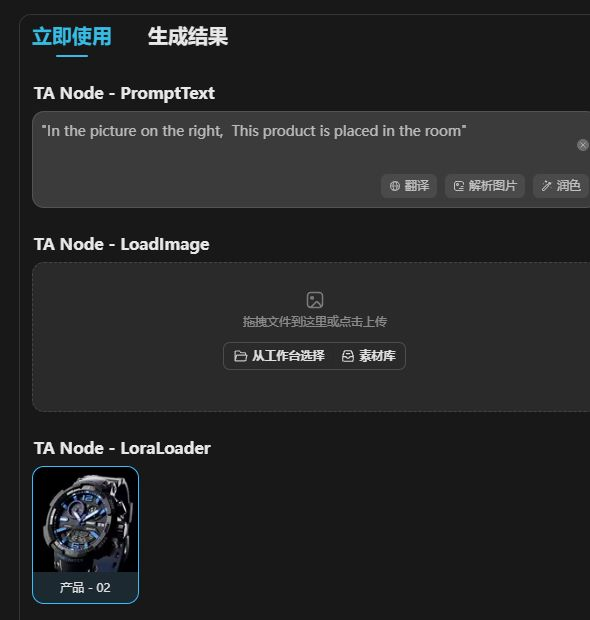
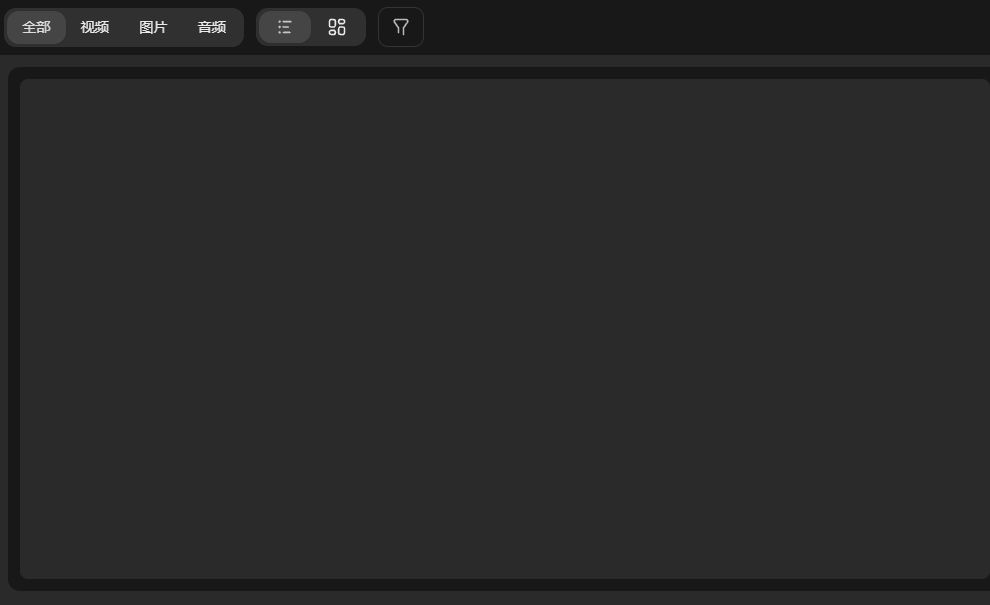
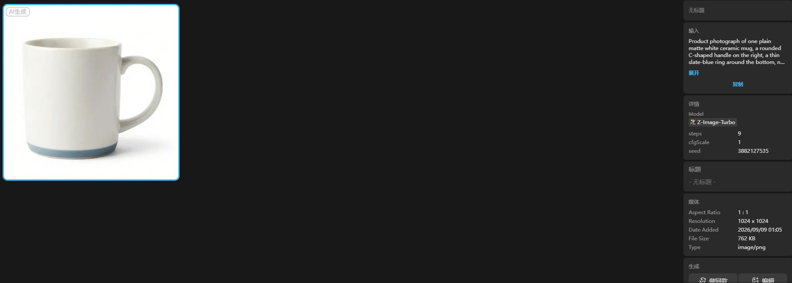
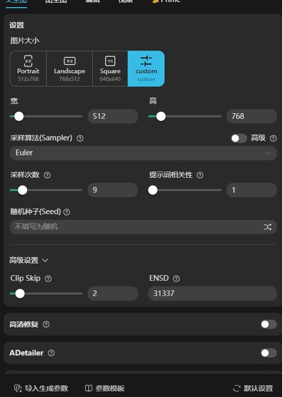

P25-tusi-E1 · 用户自述
搜索求助帖账号A称寻找视频LoRA无结果，并询问如何积累免费资源。
2025-06-09 · 观察：2026-09-10
只知任务，不知职业/付费；同一发帖人与后续回复合1。
吐司与 Tensor.Art 涉及风格资源搜索与生成、模型或工具发布、画布连续创作三类任务。普通用户记录主要来自国际站，反映搜索、LoRA装配和资源可用性问题，国内用户构成仍缺材料。国内暂停补贴与国际站Pro激励调整分别适用。
| 内容使用者 | 内容供给者 | 付款方 |
|---|---|---|
| 找角色/风格模型、复现作品和编辑结果的人；国际站观察不能归算中文站。 | 训练或导入模型、发布工作流与工具的人；转载模型与原创作者不是同一供给身份。 | 平台算力/会员、单独资源访问可能由使用者支付；作者得补贴和买方付费应分开。 |
Tensor.Art 国际站公开用户；吐司只保留产品组对照 · 有用户线索的候选画像
| 观察点 | 群体占比 |
|---|---|
| 4个可区分用户点 | 未知 |
| 问题 | 具体材料 |
|---|---|
| 任务 | 找到指定 LoRA，搭配底模或从作品参数继续生成。 |
| 触发 | 看到想用的角色、画风或视频资源，站内搜索却找不到。 |
| 希望取得的结果 | 找对可用版本，并让自己的输入呈现所需特征。 |
| 困难 | 关键词、大小写和标签搜索结果不稳定；提示里写LoRA不等于实际加载；目标资源缺失时复现中断 |
| 需要的内容 | 准确模型名和版本、适用底模、资源入口、加载方式、参考输出。 |
| 替代方法 | 从作者页收藏定位；从其他模型库取得资源后自行运行。 |
| 持续使用记录 | 搜索帖3个可区分使用者描述找资源办法；另一帖1位因LoRA未加载求助。属于不同任务片段，没有长期留存率。 |
| 回访假设 | 已收藏资源和熟悉作者可能减少下次搜索；新题材触发继续生成。 |
| 付费记录 | 讨论含免费额度需求；没有核这些人购买Pro或具体资源，不能称付费画像。 |
国际站模型作者与导入使用者；国内激励只作规则参照 · 有用户/内容观察的候选画像
| 观察点 | 群体占比 |
|---|---|
| 2个可区分用户点 | 未知 |
| 问题 | 具体材料 |
|---|---|
| 任务 | 上传模型、补参数并适配底模，使资源可以被别人使用。 |
| 触发 | 外部训练的LoRA要上线，或新底模需要新的资源版本。 |
| 希望取得的结果 | 资源可加载，有可比较版本与使用说明，并形成有效反馈。 |
| 困难 | 模型格式与平台适配问题；同一任务有多个版本需解释；激励条件变化影响回报预期 |
| 需要的内容 | 上传格式、基础模型兼容、触发词、版本差异、错误与收益规则。 |
| 持续使用记录 | 1位上传者自述数小时不能运行；另一个作者有2026年2月至8月多版发布。前者未获成功确认，后者不能证明买方采用。 |
| 回访假设 | 新底模、用户错误和已有订阅关系可能驱动维护。 |
| 付费记录 | 中文站6月停旧激励保留单独付费；国际主站7月收窄Pro奖励，不可混成全组作者收入变化。 |
吐司Canvas；国际站Forge只作相邻产品能力观察 · 官方目标支持的候选画像
| 观察点 | 群体占比 |
|---|---|
| 0个可区分用户点 | 未知 |
| 问题 | 具体材料 |
|---|---|
| 任务 | 把参考图、生成和后续修改留在同一空间继续处理。 |
| 触发 | 单次出图不够，需要对同一主题反复调整和组合素材。 |
| 希望取得的结果 | 保留上下文与项目过程，少重复传图和找资源。 |
| 困难 | 原模型与新画布资源边界；旧资源迁移后可用性；是否能向他人交付完整项目未知 |
| 需要的内容 | 原图与过程材料、迁移说明、可复制边界、资源余额规则。 |
| 替代方法 | 继续单次生成与外部图像编辑，或用其他画布产品。 |
| 持续使用记录 | 官方记录确认Canvas方向；未取得普通用户迁入、连续修改或复用作品的记录。 |
| 回访假设 | 项目未完成会继续回来是机制推断，尚无使用者轨迹。 |
| 付费记录 | 产品入口不证明迁入者实际付费，也不证明旧会员与新资源通用。 |
| 产品提供 | 内容形态 | 如何发挥作用 | 观察结果 | 剩余工作 |
|---|---|---|---|---|
| 模型/作品页、生成参数、收藏和再创作入口 | 模型资源、带参数作品、用户答疑 | 沿作品或作者找到版本，再在资源选择区加载，而非只复制提示文本。 | 用户公开描述按来源作品、作者页和收藏找回LoRA；仍有搜索和识别失败。 | 未实际Remix；未证明种子、参考和后期都继承，不能承诺同款等于同图。 |
资源寻找与使用方法线索
| 产品提供 | 内容形态 | 如何发挥作用 | 观察结果 | 剩余工作 |
|---|---|---|---|---|
| 上传发布、版本页、触发词/参数和工具说明 | 模型卡、多版本资源、问题讨论 | 作者交代基础模型与版本取舍，用户据输入选择。 | 上传失败自述和连续版本发布同时存在；未取得买方完成确认。 | 不能把六个版本算六位作者；不同字段仍可能冲突，收益与效果改善都未证实。 |
供给可发布/可维护；运行未核
| 产品提供 | 内容形态 | 如何发挥作用 | 观察结果 | 剩余工作 |
|---|---|---|---|---|
| 单独资源付费及新画布/模板方向 | 官方激励公告、Canvas更新记录 | 旧资源与新产品能力分层承接；作者选择供给和定价方式。 | 中文站已暂停旧激励，国际主站按Pro使用收窄；未观察普通用户完成迁移。 | 计划中的Canvas/Forge新激励不等于已经上线；无法推停补引起流失或迁移成功。 |
规则/产品方向已确认
搜索求助帖账号A称寻找视频LoRA无结果，并询问如何积累免费资源。
2025-06-09 · 观察：2026-09-10
只知任务，不知职业/付费；同一发帖人与后续回复合1。
同帖账号B表示需到作者主页手动找视频LoRA并收藏便于再次访问。
2025-06-10 · 观察：2026-09-10
是明确寻找方式自述；关于当时积分规则不采作现行规则。
同帖另一账号C称搜索某动漫角色未果，改搜作品名找到两项LoRA，批评搜索体验。
2025-06-12 · 观察：2026-09-10
可区分公开署名观察，不是实名去重人数；未复现搜索。
另一求助者称提示中的LoRA不识别、重试得到不同图片；回复建议在Additional Resources加载。
2024-12-23；回复至2025-01-19 · 观察：2026-09-10
只计原求助者；答疑不能证明求助者后来成功。
2023-10-18 · 观察：2026-09-10
历史兼容失败，不能说明2026年仍存在同样问题；未取得成功后续。
KJ-ArtTool同一作者在2026-02、04、08月发布不同版本；新版分Creative、Balanced、Polished用途。
版本2026-02-14至2026-08-29 · 观察：2026-09-10
已读v21原页记录；同一作者全部版本合1。Polished字段Epoch与正文不一致，不自动纠正。
吐司公告自2026-06-01暂停旧创作者激励，保留单独付费、算力返还和历史收益，明确不影响Tensor.Art。
2026-05-20 · 观察：2026-09-10
公开规则不是实际作者留存或收入；Canvas新激励表述是计划。
TensorArt公告自2026-07-22调整为Pro相关使用奖励，主站适用而Hub除外，保留Buffet资源付费。
2026-07-15 · 观察：2026-09-10
不适用于吐司；未据计划推新Forge激励已上线。
吐司更新记录包含Canvas、新资源体系和模型迁移方向。
记录含2026-04至06月 · 观察：2026-09-09
读取baseline和evidence-update既有记录；没有普通迁入者实例。
一条Tensor.Art作品详情记录底模、LoRA、正负提示和采样等参数，并有Remix入口。
2024-05-10 · 观察：2026-09-09
继承content-depth已读公开页；单条作品不是更多独立用户，不运行Remix。
Reddit 公开用户 · 2025-06-09至06-12 · 查阅：2026-09-10
公开正文已读；未登录、未运行或付费。
Reddit 公开用户 · 2024-12-23 · 查阅：2026-09-10
公开正文已读；未登录、未运行或付费。
Reddit 公开用户 · 2023-10-18 · 查阅：2026-09-10
公开正文已读；未登录、未运行或付费。
Tensor.Art 公开作者 · 上传2026-08-29；项目更新2026-09-02 · 查阅：2026-09-10
依据同日公开版本记录，未再次访问各版本页。
吐司官方 · 2026-05-20 · 查阅：2026-09-10
公开正文已读；未登录、未运行或付费。
Tensor.Art 官方 · 2026-07-15 · 查阅：2026-09-10
公开正文已读；未登录、未运行或付费。
吐司官方 · 含2026-04至06月更新 · 查阅：2026-09-09
沿用baseline和evidence-update中2026-09-09已读原文记录。
Tensor.Art 公开作品 · 2024-05-10 · 查阅：2026-09-09
沿用content-depth.json中2026-09-09已读详情记录。
Tensor.Art同一作者可发布模型、节点工作流和封装工具。模型说明所用能力，工作流展示组合方法，工具页接受输入并运行。三类对象的使用次数应分别统计。
一项资源的一个版本
| 样例 | 可以取得什么 | 后续动作 | 条件与限制 |
|---|---|---|---|
| Imam Ali Shrine的FLUX.1 LoRA版本页。 | 资源信息与使用条件；完整训练数据未公开。 | 可按底模与触发词选择使用；未运行。 | 页面明确禁止转载；权限列表的勾选状态未在文本中完整保留，不能据名称判断允许。 |
节点组合和过程说明
| 样例 | 可以取得什么 | 后续动作 | 条件与限制 |
|---|---|---|---|
| SUPIR + UPSCALE的32节点工作流。 | 可理解组合与局部修改；未导出验证。 | 查看节点及输入后决定是否运行或修改。 | 节点清单不包含可核验的全部配置与依赖版本。 |
面向直接使用的同名工具
| 样例 | 可以取得什么 | 后续动作 | 条件与限制 |
|---|---|---|---|
| SUPIR工具页，更新2025-05-21。 | 使用教学，具体输入表单仅加载到Loading状态。 | 阅读说明并进入工具；API链接存在未等于已调用。 | 作者同时承认可能增加细节；“不改变原图”不能按字面保证。 |
一个作者的两条同名内容，各自URL与更新日期不同；不是配置一致性测试。
| 材料部分 | 观察到什么 | 作用分析 |
|---|---|---|
| 工作流示例与节点清单 | 工作流页有示例图，列32个节点及加载、采样、保存等节点类型。 | 分析：可判断复杂程度和依赖方向，不能还原所有参数。 |
| 相似度取舍 | 正文解释Control Scale的变化会影响接近原图的程度，并给出建议起点。 | 分析：使用者必须先决定保真还是重构细节。 |
| 提示与采样调整 | 可移除自动描述节点；作者说明小图与采样器的兼容问题。 | 分析：把提示控制和故障处理变成可操作线索。 |
| 工具的重复使用说明 | 同名工具页建议保存一次处理的结果后再次上传，同时提醒细节可能变化。 | 分析：重复操作是用户判断后的选择，不是无损还原证明。 |
不能因作者主页同时列两页就认定自动封装关系、参数同步或完全保真。
| 可取得或继承 | 还需准备 | 不能直接迁移 |
|---|---|---|
| 模型页可读取底模和触发词；工作流提供节点与参数说明；工具提供操作方法和API入口。 | 使用者仍需输入图片、匹配依赖，并决定相似度与细节变化的可接受程度。 | 模型禁止转载不能被在线使用按钮覆盖；导出文件是否含依赖未知，同名工具也不是工作流配置副本的证据。 |
国内吐司与Tensor.Art主站采用不同激励政策：国内停止部分创作者激励，保留资源与单独付费；海外部分奖励与Pro使用绑定。作者可发布模型、工具和工作流，三类资源各有交付和维护要求。
所读作者主页同时列出模型、AI工具、工作流和帖子；SUPIR有同名工具与工作流入口。
| 执行与分工 | 触发与节奏 | 运营作用（分析） | 失效条件 |
|---|---|---|---|
| 作者供给不同深度材料，平台分类承载。 | 作者发布或改版触发；未证明固定更新周期。 | 分析：用户可以按能力与任务选择使用深度。 | 同名不证明配置完全一致，也不保证同步更新。 |
吐司6月1日起停止旧激励、关闭相关新申请，既有资源与互动保留，并放开历史余额最低提现门槛。
| 执行与分工 | 触发与节奏 | 运营作用（分析） | 失效条件 |
|---|---|---|---|
| 平台改状态和权益展示，作者决定是否继续维护或单独收费。 | 通知2026-05-20，主要调整6月1日；提现门槛自通知起放开。 | 分析：退出补贴时仍需安排存量关系。 | 未披露作者流失和实际提现结果。 |
7月22日起相关奖励仅计Pro使用；新底模、Pro模型、Pro工具分别设条件，Hub不受影响。
| 执行与分工 | 触发与节奏 | 运营作用（分析） | 失效条件 |
|---|---|---|---|
| 平台界定资格和审核，作者选择是否申请及设置付费访问。 | 规则生效及后续符合条件的使用触发。 | 分析：供给回报与有商业可能的使用连接更紧。 | 具体系数、收益改善和Pro用户增长未证明。 |
SUPIR工作流解释小图报错与替代采样器；工具页另说明重复上传处理的用法。
| 执行与分工 | 触发与节奏 | 运营作用（分析） | 失效条件 |
|---|---|---|---|
| 作者解释，使用者按素材调整；平台是否验证未知。 | 遇到不适配素材、改参数或重复处理时。 | 分析：复用理由落在同类任务与维护信息。 | 两页更新时间不同，未测重复处理是否改善质量。 |
2026-05-20官方通知及6月1日生效安排，仅核规则。
平台需要同步资源状态、权益页、申请入口和结算；具体岗位人数未披露。
不能证明作者接受调整或新Canvas激励已上线；公告明确不影响Tensor.Art。
| 供给者回报 | 参与者回报 | 与付费的连接 |
|---|---|---|
| 国内保留单独付费与算力返还；海外Pro相关奖励需满足不同资格，不能沿用“上传即有补贴”。 | 使用者选择资源解决问题；Pro在海外奖励统计中的角色不代表普通用户不再能使用。 | 海外仍保留Buffet付费访问设置；是否有某个作者真实付款订单未知。 |
| 持续工作 | 尚未量化的成本 | 成立条件 |
|---|---|---|
| 需同步资源分类、申请资格和结算说明；多形式作者还需维护说明与版本关系。 | 分析：停补通知、作者异议与老资源维护都不因关闭补贴自动消失，工时资料不足。 | 能够识别不同站点、资源和规则生效时间，才能避免给作者错误承诺。 |
吐司已停止旧上传激励，Tensor.Art将部分奖励限定为Pro用户使用。两站规则分别适用，作者供给、直接付费和补贴变化需分开观察。
| 付款方 | 收入方式 |
|---|---|
| 主站会员及算力购买者、单独购买模型/工具访问权的使用者；Canvas另有Energy资源体系。作者也可能同时支付生成或训练成本。 | 主站订阅与算力、作者资源单独付费；吐司Canvas资源独立；Tensor.Art保留有条件的Pro及基金激励，不能用吐司规则概括全球站。 |
官方通知自2026-06-01停止独家、首发和Pro等创作者激励，关闭新增申请；单独付费、算力返还和历史收益提现保留。通知直言依靠激励金驱动模型上传难以持续。这说明退出的是一类供给补贴，不能写成平台不再收费或作者不能赚钱。
2026-07-22调整后的主站规则保留TenStar Fund、Pro模型和Pro工具三条路径，多项收益仅计算Pro用户使用；部分基金限定新基座，普通未开启Pro段的工具不再获激励。Buffet付费访问仍在。推断：平台正让供给激励更贴近能变现的消费，但尚无调整后收入与留存数据。
吐司更新日志明确Canvas使用独立Energy，与主站算力分开，部分闭源模型向Canvas迁移。推断：用户从模型站迁往连续创作空间时，还要重新理解可用资源与成本；历史会员和历史算力不能自动代表新空间的全部权益。
工具使用者可能为特定效果与省去调参付费，连续创作者可能为资源量和项目接续付费，作者需要被使用后的收益。以上是由功能和收费机制形成的画像假设，不是平台披露的收入构成；未核出两站各档实付价格及用户消费占比。
不能把三站混成一种赚钱模型：吐司保留资源单售；Tensor.Art继续Pro相关激励但限制计入的使用；Hub的消费代币与主站奖励也须分开。 各站实际销量、作者净收入、续订和最新成交价格未知。
| 指标 | 披露值 | 期间与对象 | 解释 | 限制 |
|---|---|---|---|---|
| 吐司年度回顾中的网站用户 | 超过320万 | 2024年度报告；2024-12-28发布；吐司报告原文的网站用户口径 | 历史规模基线 | 未交代与Tensor.Art去重关系，也不是MAU；不代表2026年规模，不与Tensor.Art相加 |
| Tensor.Art用户里程碑 | 300万 | 2024-11；年报2024-12-28发布；Tensor.Art年报 | 国际站历史规模基线 | 非活跃或付费用户数；两站用户重叠未知 |
| 吐司年龄与性别构成 | 26–35岁占38%；女性占20% | 2024年度报告；吐司报告用户样本，采样方法未公开 | 提供历史招募画像线索 | 不能推断职业、购买能力，不能当2026年结构 |
| Tensor.Art使用习惯 | 70%偏好Web；女性占20% | 2024年度报告；Tensor.Art年报用户样本 | 历史上Web仍是重要创作入口 | 采样及统计方式未披露，不能替代当前实际用户访谈 |
| 当前付费规模和盈利 | 未公开核实 | 截至2026-09-09；吐司与Tensor.Art分别 | 尚不能判断退出补贴后的商业结果 | 官方调整公告没有给出前后MAU、付费率、利润或作者收入中位数 |
吐司官方 · 2026-05-20 · 查阅：2026-09-09
已读原文；2026-06-01生效，明确不影响Tensor.Art
Tensor.Art官方 · 2026-07-15 · 查阅：2026-09-09
已读原文；2026-07-22生效，主站与Hub规则区分
吐司官方 · 含2026-04-13至06-02更新 · 查阅：2026-09-09
已读原文；Energy独立及模型迁移，历史上线活动不当现行优惠
吐司官方 · 2024-12-28 · 查阅：2026-09-09
已读原文；历史用户与年龄结构，跨站口径未说明
Tensor.Art官方 · 2024-12-28 · 查阅：2026-09-09
已读原文；用户里程碑、Web偏好和使用习惯均为历史
吐司 / Tensor.Art · 2026-05-20；2026-06-01生效 · 查阅：2026-09-11
live_read：2026-09-11公开原页正文复读；未登录、未生成或付费。 停止原激励、保留资源单售/算力返还，未来Canvas方向不作已上线成效。
吐司 / Tensor.Art · 2026-07-15；2026-07-22生效 · 查阅：2026-09-11
live_read：2026-09-11公开原页正文复读；未登录、未生成或付费。 TenStar限定新底模及Pro使用；Pro模型/工具继续指定激励，标准Tools取消奖励；不影响Hub。
吐司 / Tensor.Art · 2025-11-27（检索日期）；后续具体日期未逐条核 · 查阅：2026-09-11
live_read：2026-09-11公开原页正文复读；未登录、未生成或付费。 长期Pro及每周2至3天的本人自述；ControlNet、电脑占用与替代选择。旧金额和情绪指控均不作当前价格或事实。
吐司已生成 1 张、保存到素材库、重新打开并做同款；Tensor.Art 已检查模型带入和参数模板，未生成。两站按一个产品组研究，权益不推定互通。

输入仍显示 TA Node - PromptText、LoadImage 和 LoraLoader；案例要求先有商品参考图。
取图避开账户区域。截图只证明当时可见状态。
来源页面 ↗
从普通文生图生成器得到结果，保留 AI 生成标记。
这是普通文生图结果，并非上方商品换背景工具的运行结果。
来源页面 ↗
素材库保留输入、模型和尺寸等信息，并提供做同款、编辑和下载。
取图避开账户区域。截图只证明当时可见状态。
来源页面 ↗
模型自动带入，仍有 LoRA、ControlNet、采样和参数模板入口。
该站只检查配置，没有提交生成；不能沿用吐司的成功结果。
来源页面 ↗围绕虚构白陶瓷杯，检查进入、配置、生成、保存与再使用。
吐司完成生成、保存、找回和配置复用。未用新素材再次提交，也未验证换背景工具。生成前有 3 次按钮激活，最终只有 1 个任务被接收；未继续消耗试次。
已接收生成任务1次。仅使用既有免费资源；没有充值或公开发布。每平台最多 3 次提交，包含重试。
| 阶段 | 用户动作 | 可能遇到的障碍 |
|---|---|---|
| 发现与进入 | 从效果、模型或按用途排列的小工具进入。 | 热门效果未必对应用户正在做的任务。 |
| 第一次做成 | 上传自己的材料，调整公开选项并生成。 | 节点名称、输入前提、首次设置都会增加解释成本。 |
| 再次使用 | 换一份素材再次使用同一方法。 | 公开选项太少可能不够用，太多又把复杂度交回用户。 |
| 贡献给别人 | 作者选择可变参数、命名、重测并维护工具。 | 系统迁移和底层升级会使已发布工具需要返工。 |
素材保存与临时生成历史不能混为一谈。本次生成详情显示到期日期，保存到素材库后可另行找回；不能据一个任务的日期推定全部资源的统一保留期。“做同款”带入主要设置，但不会自动固定原随机种子。
登录后打开的商品摄影工具显示“TA Node - PromptText”“TA Node - LoadImage”等字段，还要求上传商品图片。这个实例说明，平台具备封装能力，不代表每个作者都把字段写成了使用者能理解的话。
还检查了工具目录、详情、在线生图及首次水印设置。实际结果以本页任务记录为准；这里的观察不能外推为所有吐司工具的体验。
两站在本次打开的生成器中均提供模型、LoRA、ControlNet、采样、种子和参数模板。入口相近，不能据此推定账号、资源、权益或激励互通。吐司已得到样图；Tensor.Art 本次仅完成模型带入与配置检查。
公司介绍描述模型分享与云端运行，作品可以做同款并分享到社区。小工具教程要求作者先跑通工作流，再挑选向使用者暴露的输入，预览、运行验证后发布为应用。专业创作过程因此被包装成普通用户可理解的入口。
更新日志确认 2026 年 4 月 Canvas 上线，6 月 Canvas Agent Beta 发布；这是平台公开的产品演化，不能仍以早期模型站描述全部能力。
5 月 20 日官方致信创作者，宣布 6 月 1 日起停止独家、首发及 Pro 创作者激励和新增申请；存量内容、互动记录与相关付费设置、提现安排仍有保留。旧的会员内容说明不应覆盖这份新通知。
平台把调整解释为旧激励方式难以持续、资源转向 Canvas 与 Agent。这个经营解释是公司自述，不能直接推导出全部创作者经济都失败。通知称新 Canvas 激励在准备中，未确认完整上线规则。
Canvas 上线期曾安排邀请与资源兑换活动，有明确的 4 月活动窗口且已经结束。主站算力和 Canvas Energy 不能视为同一种可自由替换的资源。
旧用户因资源迁移到新画布，并不代表出现稳定任务。应分别记录迁移参与、首次有效结果、第二次带新素材回来，以及活动结束后的行为。
更新日志曾就快速模式参数调整通知不足致歉，也记载外部资源导入暂停、部分模型功能维护。这些历史记录说明生成平台会受产品变化与上游资源影响；不代表问题截至今日仍然存在。
对作者而言，规则与可用能力变化会增加维护成本。案例供给合作不应只约定一次发帖，还应约定有效期、失效通知和必要修改的处理方式。
官方年度报告和作者指南把模型、工作流工具、图片视频创作区分开来：AI Tools 将复杂过程封装给初学者，Remix 让作品携带下一步行动。年度报告的人群比例和规模是 2024 年自述，本报告不当作当前画像。
内容分类并非越多越好。真正值得研究的是用户能否从可见结果进入正确资源、作者能否知道自己的资源被谁用于什么任务。
Pro 模型与工具需要原创、可用性及质量审核，模型还有公开、独家等合作条件。会员使用、转会员奖励、付费访问对应不同收益来源；并非所有普通作品都参加同一种分成。
收益指南提供内容浏览、Pro 使用及交易记录等反馈。公开说明能确认这些维度的存在，无法核实作者中位收入和真实到账分布。
7 月 15 日公告宣布，7 月 22 日起 TenStar 奖励只覆盖指定新基模，公告时列 Anima 与 Krea2；只统计 Pro 用户使用，普通非 Pro 工具不再获得一般激励。Pro 分成及部分付费访问仍另行存在。
因此 2025 年总指南中“可以如何变现”的说明，需要由新通知限定适用范围。名单可能继续变化，没有进入 Discord 追踪后续清单。
2025 年每日任务调整将资源奖励连接到外部分享、获赞及精选，并设次数上限。2026 TensorForge Cup 要求使用指定创作方式、展示过程并在外部社交平台公开传播；投稿期已经结束。
这些机制可同时买到作品、过程材料与曝光，但活动参与和任务留存不是同一指标。活动后的作者继续供给、普通用户继续复用，才是多元拾光需要追踪的后续。
可以学习“好结果—可复用资源—作者贡献反馈”的连续关系。先用人工反馈记录调用成功、结果采用、疑问和修订，比立即复制收益后台更符合多元拾光的规模。
独家会限制作者其他渠道分发，补贴变化也会影响合作预期。多元拾光尚无稳定流量，应允许作者保留原平台影响力，以明确的小交付和实际支持换取合作，避免提前要求全量独家。
新版小工具教程要求作者先跑通工作流，再把对外输入替换成专用节点，命名、测试后发布。提示词可以变成选项，数字参数可以改为弱、中、强等选择。
教程同时提供旧工具迁移帮助。发布之后仍有修复成本；现行创作者激励调整见原档案，不能用旧激励承诺长期补贴。
Pro 工具品质说明要求稳定输出、清楚介绍、多个例图与前后对比，并尽量减少可调选项。该文是 2025 年说明，只取用品质要求，激励以 2026 年最新通知为先。
官方创建教程记录过系统升级后工具需要调整，平台先更新部分工具并提供迁移帮助。这是持续维护成本的具体证据。
吐司官方调整通知明确本次调整不影响 Tensor.Art，支持将两站作为关联产品组比较。自 6 月 1 日起停止的范围是独家、首发与 Pro 创作者现金激励；通知仍保留付费模型和小工具、运行算力返还及提现。
通知把后续投入转向 Canvas／Agent。停止部分现金补贴，不等于取消所有作者收入；同一产品组也不等于同一账号、订阅与资源互通。不对未核验的互通能力作结论。
| 做法 | 依据 | 投入 | 调整条件 |
|---|---|---|---|
| 一条案例先提供几种明确选项、各自示例及不适用情况，运营观察新手能否自行选择。 | 计划中的 MakeNow 分享复制解决方法交接；输入设计还需单独验证，决定别人接手之后能否用。 | 产品负责命名与验收，作者修方法，运营修说明；研发接平台通用问题。稿费包含第二人试做后的修订。 | 同一选项组合被不同用户独立复用，再投入正式封装。 |
| 做法 | 依据 | 投入 | 调整条件 |
|---|---|---|---|
| 首轮按可验收案例与维护期采购，不以热度作为主要结算标准。 | 运行可能是返工，帖子可能缺少方法；补贴本身还会改变行为。 | 人工验收比按数量结算费时，但样本少时可以看清真实供给质量。 | 作者能持续处理失败、新用户确实采用，再讨论规模化激励。 |
官方 · 未标更新日
模型与创作社区定位
官方 · 未标更新日
先跑通再封装、预览与发布
官方 · 更新 2026-05-20；6 月 1 日生效
当前激励变化，优先于旧说明
官方 · 2026 年多项记录
产品演化、资源区别与历史摩擦
官方 · 精确更新日未核
会员与算力购买入口背景，不分析法律效力
官方 · 旧页面未标日期
部分已被新通知覆盖，仅作历史对照
官方 · 未核更新日
原创与多类内容治理
官方 · 2024-12-28
历史产品演化与活动自述
官方 · 2025-09-09
作者分层；部分规则过时
官方 · 2026-07-15；7 月 22 日生效
收窄规则的最高时效依据
官方 · 2025-09-12
模型资格、质量与付费边界
官方 · 2025-09-12
工具包装与审核
官方 · 2025-09-15
收益数据与提现流程，未测到账
官方 · 2025-09-03
有日期的任务机制，当前任务面板未核
官方 · 2026-06-12 至 07-10
已结束赛事，过程与传播要求
官方 · 未标日期；访问 2026-09-09
对外输入、命名、重测和旧工具迁移
操作 · 工具更新 2025-08-13；观察 2026-09-09
登录后字段与前置输入观察；不展示个人账号或余额
官方 · 2025-09-12
只取品质要求；旧补贴规则不沿用
官方 · 未标日期；访问 2026-09-09
输入封装、测试及迁移维护
官方 · 更新 2026-05-20；6 月 1 日生效
明确本次调整不影响 Tensor.Art 激励；区分停止现金激励与保留付费资源、算力返还
产品组继续合并，但国内吐司、Tensor.Art主站和Hub必须分开记录。新补的普通Pro用户展示了具体留用原因：ControlNet可控性、避免占用本机以及低频兴趣使用；这也反驳每日积分一定适合付费用户的假设。国内普通用户和Canvas连续任务仍资料不足。
新增国际站历史个案是每周少数几天做实验性兴趣创作的Pro用户，不是可据此推定的职业设计师。国内画像没有同等原发证据。
模型能存在却难被搜到；普通用户会改查作品来源、作者页或收藏，资源发现的负担没有随模型数量增加自动消失。
国内自2026-06-01停止原创作者激励，保留单独付费与算力返还。国际主站自2026-07-22收窄补贴资格；其公告明确Hub不随本次调整。
不能把三站混成一种赚钱模型：吐司保留资源单售；Tensor.Art继续Pro相关激励但限制计入的使用；Hub的消费代币与主站奖励也须分开。
ControlNet个案有长期Pro使用自述与同帖补充的每周频次，但没有后续续订凭证；搜索个案有本人找到资源的回话，仍未证明生成结果。
该用户拒绝本地方案是因大模型与电脑占用；比较Yodayo、PixAI时又遇到控制项限制。保留Tensor可能是迁移成本的选择，不能直接解释为全面满意。
任务：使用ControlNet做可控图像实验。
困难：代币迁移与日领方式不适合其使用节奏，又不愿让本机长时间用于生成。
结果：有具体替代取舍和使用频次自述；没有最后迁移或续订决定。
尚缺：实际后续去向、支出及其他平台当前功能。
任务：寻找特定视频或角色LoRA。
困难：搜索不返回预期资源。
结果：支持搜索替代行为；不证明平台修复搜索，也无生成结果验收。
尚缺：当前版本是否改善、迁移后的链接与资源是否仍稳定。
这是官方投入方向与真实任务采用之间的核心断点。
人工预留：国内普通用户同一项目从输入、修改到采用的公开记录，至少有第二时点。
工具可控性与每日权益可能产生相反作用。
同一用户公开后续，不把表示不满当取消、不把Pro有效当续费。
live_read：2026-09-11公开原页正文复读；未登录、未生成或付费。
停止原激励、保留资源单售/算力返还，未来Canvas方向不作已上线成效。
live_read：2026-09-11公开原页正文复读；未登录、未生成或付费。
TenStar限定新底模及Pro使用；Pro模型/工具继续指定激励，标准Tools取消奖励；不影响Hub。
live_read：2026-09-11公开原页正文复读；未登录、未生成或付费。
搜索困难及手工找资源的自述；不采用旧积分奖励数。
live_read：2026-09-11公开原页正文复读；未登录、未生成或付费。
长期Pro及每周2至3天的本人自述；ControlNet、电脑占用与替代选择。旧金额和情绪指控均不作当前价格或事实。
三站作者规则是否仍应分开？：吐司2026-05公告；TensorArt2026-07公告；两份原文明确分站适用；不得串用奖励规则。
国际站用户为什么留下或找替代？：检索：site.reddit.com/r/TensorArt_HUB 2026 subscription；TensorHUB主帖及本人后续；找到可核普通Pro用户的任务与选择边界，未找到其最终迁移结果。
是否找到国内Canvas连续使用的普通样本？：既有国内画像缺口；检索：site.linux.do 吐司 canvas 使用；返回无关内容或产品说明，未取得合格原始任务链；继续保留人工项。